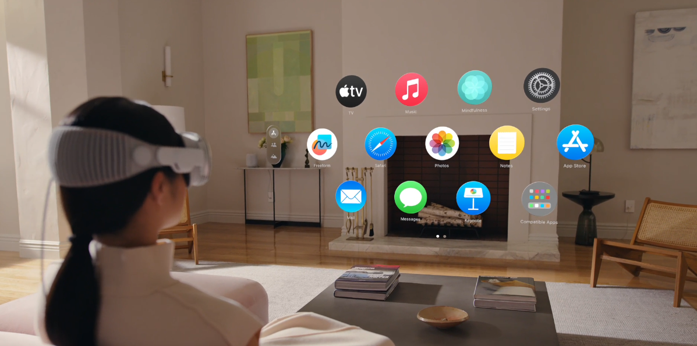
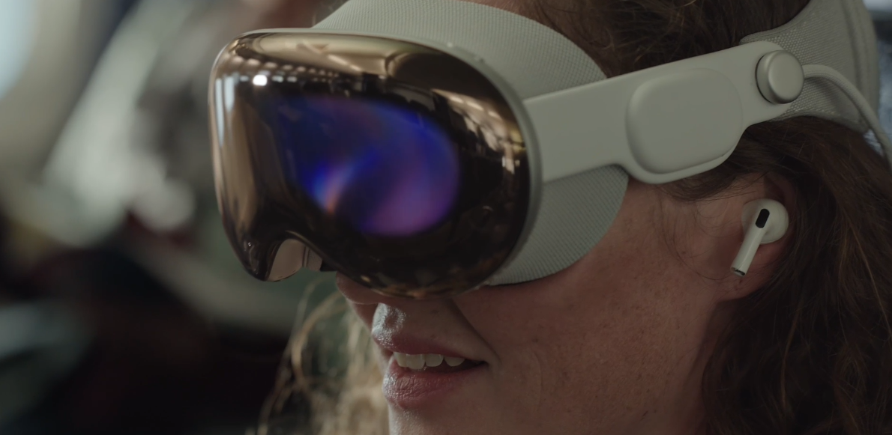
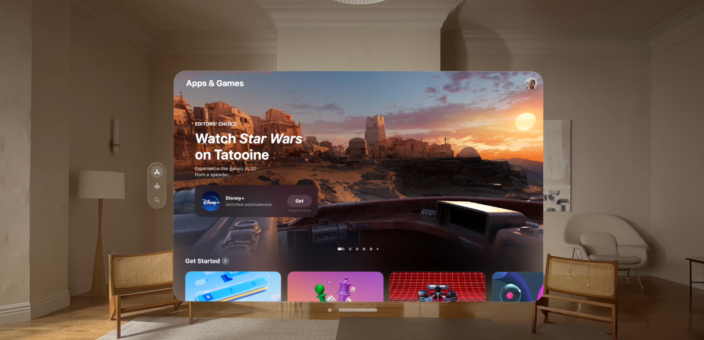
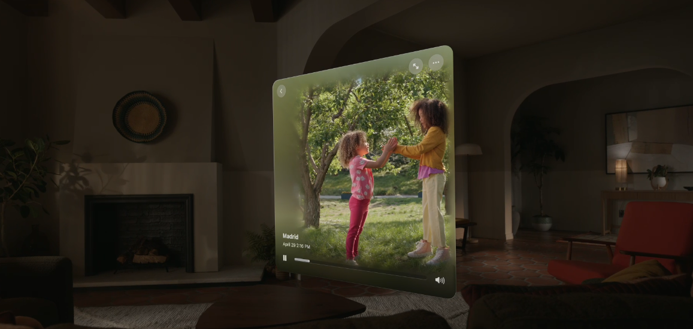
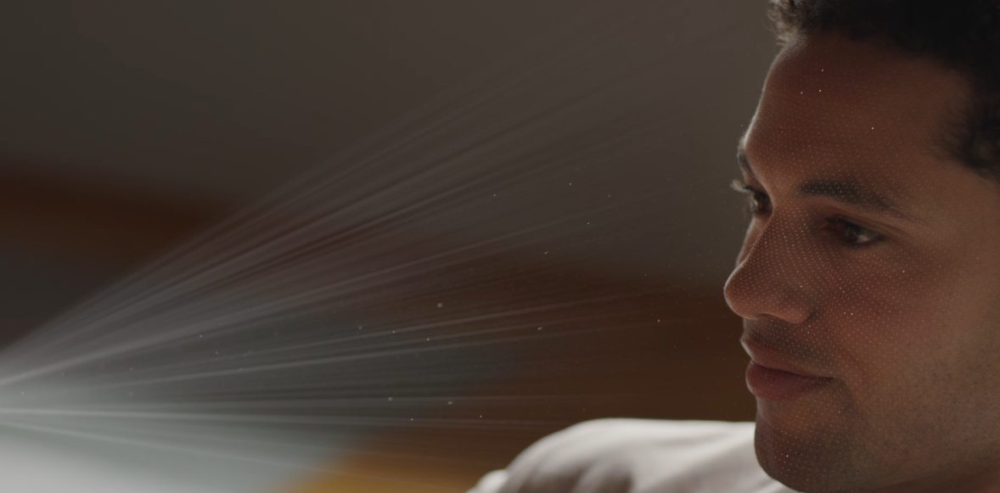
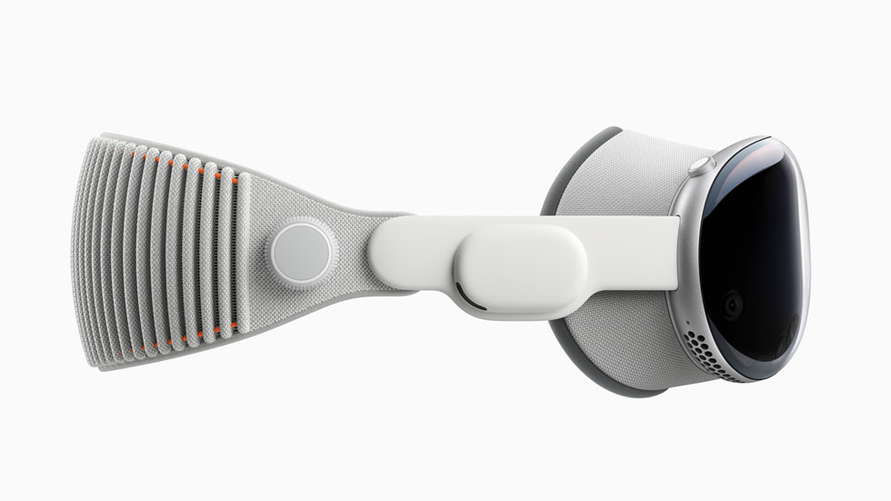
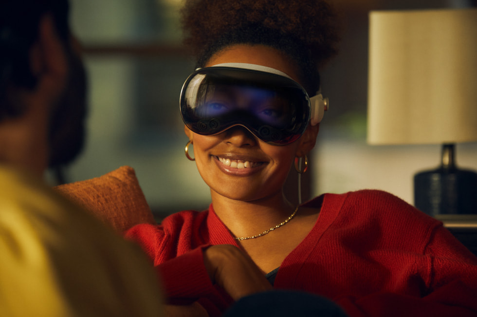

Compania Apple a anunțat astăzi că Apple Vision Pro va fi disponibil începând de vineri, 2 februarie, în toate locațiile Apple Store din S.U.A. și în Apple Store online din S.U.A. Vision Pro este un computer revoluționar care transformă modul în care oamenii lucrează, colaborează, se conectează, retrăiesc amintiri și se bucură de divertisment. Vision Pro îmbină perfect conținutul digital cu lumea fizică și deblochează experiențe virtuale puternice în visionOS, controlate de cele mai naturale și intuitive intrări posibile - ochii, mâinile și vocea unui utilizator. Un magazin de aplicații complet nou oferă utilizatorilor acces la peste 1 milion de aplicații compatibile pe iOS și iPadOS, precum și la noi experiențe care profită de capacitățile unice ale Vision Pro. Precomenzile pentru Apple Vision Pro încep vineri, 19 ianuarie, la ora 5 a.m. PST.
„Era realitatii virtuale a sosit”, a spus Tim Cook, CEO-ul Apple. „Apple Vision Pro este cel mai avansat dispozitiv electronic de larg consum creat vreodată. Interfața sa revoluționară și magică va redefini modul în care ne conectăm, creăm și explorăm.”
Apple Vision Pro este alimentat de visionOS, care este construit pe baza a zeci de ani de inovație inginerească în macOS, iOS și iPadOS.VisionOS oferă experiențe virtuale puternice, deblocând noi oportunități la locul de muncă și acasă. Dispunând de o interfață tridimensională și un sistem de introducere nou-nouț controlat în întregime de ochii, mâinile și vocea utilizatorului, navigarea se simte magic. Gesturile intuitive permit utilizatorilor să interacționeze cu aplicațiile pur și simplu privindu-le, atingându-le cu degetele pentru a le selecta, atingând încheietura mâinii pentru a derula sau folosind o tastatură virtuală sau un dictat pentru a tasta. Cu Siri, utilizatorii pot deschide sau închide rapid aplicații, pot reda conținut media și multe altele.
Utilizatorii se pot scufunda, de asemenea, în peisaje dinamice și frumoase, cum ar fi parcurile naționale Haleakalā, Joshua Tree și Yosemite și chiar suprafața lunii, pentru a-i ajuta să se concentreze sau să reducă dezordinea în spațiile aglomerate. Cu Environments, lumea unui utilizator poate crește dincolo de dimensiunile unei camere fizice. Cu o simpla răsucire, utilizatorii pot controla cât de prezenți sau scufundați sunt într-un mediu.
Apple Vision Pro aduce o nouă dimensiune computerului personal puternic, schimbând modul în care utilizatorii interacționează cu aplicațiile lor. Interfața tridimensională eliberează aplicațiile de limitele unui afișaj, astfel încât să poată apărea una lângă alta la orice scară, oferind spațiul de lucru suprem și creând o pânză infinită pentru multitasking și colaborare.
visionOS are o interfață tridimensională nou-nouță controlată în întregime de ochii, mâinile și vocea utilizatorului.
Deoarece visionOS folosește cadrele de dezvoltare existente, peste 1 milion de aplicații familiare pe iOS și iPadOS sunt disponibile pe Apple Vision Pro și funcționează automat cu noul sistem de introducere. Vision Pro are, de asemenea, un App Store complet nou, unde utilizatorii pot găsi aplicații care oferă experiențe virtuale, spre deosebire de orice altă platformă. Aplicațiile pot fi aranjate oriunde și scalate la dimensiunea perfectă, toate permițând utilizatorului să rămână prezent în spațiul său.
Cu Environments, lumea unui utilizator poate crește dincolo de dimensiunile unei camere fizice, folosind Digital Crown pentru a controla cât de prezenți sau scufundați sunt.
Cu aplicații cheie de productivitate și colaborare precum Fantastical, Freeform, JigSpace, aplicații de la Microsoft 365 și Slack, Apple Vision Pro este un instrument de productivitate ideal pentru sarcinile de zi cu zi. Aplicațiile pot apărea una lângă alta la orice scară pentru un multitasking incredibil, iar cu suport pentru Magic Keyboard și Magic Trackpad, utilizatorii pot crea spațiul de lucru perfect. Cu Mac Virtual Display, utilizatorii pot chiar aduce capabilitățile puternice ale Mac-ului lor în Vision Pro, creând un ecran 4K enorm, privat și portabil, ideal pentru fluxurile de lucru profesionale.
Apple Vision Pro are ecrane de rezoluție ultra-înaltă care oferă mai mulți pixeli decât un televizor 4K pentru fiecare ochi, permițând utilizatorilor să vizioneze filme și emisiuni TV de la Apple TV+, Disney+, 1 Max și alte servicii pe un ecran cu o lățime de aproximativ 30 de metri,cu suport pentru conținut HDR. În cadrul aplicației Apple TV, utilizatorii pot accesa peste 150 de titluri 3D cu o intensitate incredibilă, oriunde s-ar afla. Vision Pro introduce, de asemenea, Apple Immersive Video, un nou format de divertisment remarcabil inițiat de Apple, care plasează utilizatorii în acțiune cu înregistrări tridimensionale 8K de 180 de grade capturate cu Spatial Audio. Utilizatorii se pot bucura și de noi experiențe interactive, cum ar fi Encounter Dinosaurs.
Jucătorii pot accesa jocuri din App Store, inclusiv peste 250 de titluri pe Apple Arcade. Jocuri de succes precum NBA 2K24 Arcade Edition și Sonic Dream Team pot fi jucate pe un ecran atât de mare pe cât doresc, cu sunet incredibil și suport pentru controlere de jocuri populare. Noile jocuri virtuale, inclusiv Game Room, What the Golf? și Super Fruit Ninja, profită de capabilitățile puternice ale Apple Vision Pro pentru a transforma spațiul din jurul jucătorilor, oferind experiențe de joc unice și captivante.
Un App Store complet nou pe Apple Vision Pro oferă peste 1 milion de aplicații, inclusiv experiențe noi care profită de capacitățile unice ale Vision Pro
Apple Vision Pro le permite utilizatorilor să captureze și să retrăiască amintirile lor preferate în moduri cu totul noi. Fotografiile și videoclipurile virtuale transportă utilizatorii înapoi la un moment special în timp, iar Spatial Audio face experiența incredibil de captivantă. Când utilizatorii sunt în mișcare, pot captura videoclipuri virtuale pe iPhone 15 Pro sau iPhone 15 Pro Max și le pot retrăi pe Vision Pro. Utilizatorii își pot vedea, de asemenea, toate fotografiile și videoclipurile la o scară de dimensiune reală, cu culori strălucitoare și detalii spectaculoase, inclusiv panorame care se extind și înfășoară în jurul utilizatorului, făcându-i să simtă că sunt exact acolo unde a fost făcut.
Fotografiile și videoclipurile virtuale transportă utilizatorii înapoiin timp la un moment special iar Spatial Audio face experiența incredibil de captivantă
FaceTime pe Apple Vision Pro profită de spațiul din jurul utilizatorului, astfel încât toți cei aflați la un apel să pară în mărime naturală, în timp ce Spatial Audio face să sune ca și cum vocea fiecărei persoane provine din locația plăcii lor. Dacă un utilizator poartă Vision Pro în timp ce este pe FaceTime, acesta apare ca Persona, în timp ce ceilalți care se alătură de pe un Mac, iPad sau iPhone vor apărea într-o placă.
Persona este o reprezentare virtuala autentică a unui utilizator Apple Vision Pro care le permite celorlalți aflați într-un apel să-și vadă expresiile faciale și mișcările mâinii — toate în timp real.Folosind tehnici de învățare automată, o Persona poate fi creată în doar câteva minute folosind Vision Pro. Personas lucrează și în aplicații de videoconferință terță parte, inclusiv Zoom, Cisco Webex și Microsoft Teams.
Persona este o reprezentare virtuala autentică a unui utilizator Apple Vision Pro care le permite celorlalți aflați într-un apel să vadă expresiile faciale și mișcările mâinii utilizatorului în timp real.
Apple Vision Pro se bazează pe inovația și experiența Apple în proiectarea de produse de înaltă performanță precum Mac, iPhone și dispozitive portabile precum Apple Watch, culminând cu cel mai avansat dispozitiv electronic personal de până acum. O cantitate uimitoare de tehnologie este împachetată într-un design frumos și compact, care utilizează cele mai avansate materiale posibile pentru a atinge obiective ambițioase de performanță, mobilitate și purtabilitate.
Apple Vision Pro este conceput ca un sistem modular, astfel încât utilizatorii să își poată personaliza masura. O bucată singulară de sticlă laminată, formată tridimensional, se curbează ușor în jurul feței utilizatorului și curge în cadrul personalizat din aliaj de aluminiu. Light Seal este fabricat dintr-un material textil moale și vine într-o gamă largă de forme și dimensiuni, flexându-se pentru a se conforma feței utilizatorului pentru o potrivire precisă. Curelele flexibile asigură că sunetul rămâne aproape de urechile utilizatorului, în timp ce Banda Solo Knit și Banda Dual Loop incluse permit utilizatorilor să găsească potrivirea optimă pentru ei. Pentru cei cu nevoi de corectare a vederii, inserțiile optice ZEISS sunt disponibile pe bază de rețetă sau ca cititoare care se atașează magnetic la Vision Pro, permițând utilizatorilor să profite din plin de claritatea și claritatea incredibilă a afișajului.
Apple Vision Pro utilizează cele mai avansate materiale posibile într-un design frumos și compact.
Apple Vision Pro este proiectat pentru a oferi performanțe de calcul fenomenale într-un factor de formă compact, portabil. Dispunând de un sistem inovator de afișare cu rezoluție ultra-înaltă construit pe partea de sus a siliconului Apple, Vision Pro folosește tehnologia micro-OLED pentru a împacheta 23 de milioane de pixeli în două afișaje, fiecare de dimensiunea unui timbru poștal, cu culori extinse și gamă dinamică mare. Această descoperire tehnologică, combinată cu lentile personalizate care permit o claritate incredibila și un sunet virtual avansat, oferă experiențe uluitoare.
Apple Vision Pro oferă, de asemenea, un sistem de urmărire a ochilor de înaltă performanță, care utilizează camere de mare viteză și un inel de LED-uri care proiectează modele de lumină invizibile în ochii utilizatorului pentru o introducere receptivă și intuitivă. Și pentru a ajuta utilizatorul să rămână conectat cu oamenii din jurul său, Apple a conceput o nouă funcție revoluționară numită EyeSight. Atunci când o persoană se apropie de cineva care poartă Vision Pro, dispozitivul arată transparent - permițând utilizatorului să le vadă și afișând și ochii utilizatorului. Când un utilizator este scufundat într-un mediu sau folosește o aplicație, EyeSight oferă altora indicii vizuale despre ceea ce se concentrează utilizatorul.
Ecranul inovator, experiențele audio avansate, sistemul de urmărire a ochilor de înaltă performanță și multe altele sunt alimentate de siliconul Apple într-un design unic cu două cipuri. Cipul M2 oferă performanțe puternice de sine stătătoare, în timp ce noul cip R1 procesează intrarea de la 12 camere, cinci senzori și șase microfoane pentru a se asigura că conținutul pare că apare chiar în fața ochilor utilizatorului.
Apple a proiectat o nouă caracteristică revoluționară numită EyeSight pentru Apple Vision Pro pentru a ajuta utilizatorul să rămână conectat cu oamenii din jur, oferind altora indicii vizuale despre ceea ce se concentrează utilizatorul.
Apple Vision Pro oferă confidențialitate și securitate lidere în industrie. Optic ID este un nou sistem de autentificare care analizează irisul unui utilizator pentru a debloca Vision Pro, a completa parolele și a finaliza plățile cu Apple Pay.Unde se uita un utilizator rămâne privat în timp ce navighează în Vision Pro, iar informațiile de urmărire a ochilor nu sunt partajate cu Apple, aplicații terțe sau site-uri web. EyeSight include, de asemenea, un indicator vizual care arată clar pentru ceilalți când un utilizator captează o fotografie sau un videoclip virtula.
Ca și în cazul tuturor produselor Apple, în visionOS au fost integrate funcții puternice de accesibilitate. Funcțiile cheie de accesibilitate, cum ar fi VoiceOver, Zoom, Switch Control, Acces ghidat și multe altele, au fost reimaginate. Utilizatorii pot interacționa cu Apple Vision Pro în întregime cu ochii, mâinile sau vocea sau orice combinație care funcționează cel mai bine pentru ei. Aceștia pot selecta o metodă de introducere preferată, cum ar fi ochii, degetul sau încheietura mâinii utilizând Pointer Control, pot întrerupe un element al visionOS timp de câteva secunde pentru a simula o atingere folosind Dwell Control sau pur și simplu pot folosi comenzi vocale pentru activitățile din Vision Pro folosind Voice Control. Dacă intrarea de la ambii ochi nu este o opțiune, visionOS permite, de asemenea, urmărirea ochilor cu un ochi dominant.
Apple Vision Pro este proiectat având în vedere mediul înconjurător, cu elemente reciclate 100% în toți magneții, cu staniu reciclat 100% și placare cu aur în mai multe plăci de circuite imprimate. Cadrul și carcasa bateriei conțin 100% aluminiu reciclat, iar Light Seal și Solo Knit Band sunt realizate fiecare cu peste 70% fire reciclate. Vision Pro îndeplinește standardele înalte ale Apple pentru eficiență energetică și nu conține mercur, ignifugă bromurată, PVC și beriliu. Ambalajul este 100% pe bază de fibre, aducând Apple mai aproape de obiectivul său de a elimina plasticul din toate ambalajele până în 2025.
Spune-ne parerea ta despre acest produs!